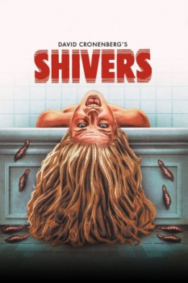
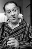

Country:United States, 88 minutes
Spoken languages:
Genres:Horror
Director(s):David Cronenberg
Writer(s):David Cronenberg
Video Codec:Unknown
Number: 1944


Certification:R
Storyline:
The residents of a suburban high-rise apartment building are being infected by a strain of parasites that turn them into mindless, sex-crazed fiends out to infect others by the slightest sexual contact.
Cast: 

Medium: Bluray,
Loaned: No
Aspect ratio: Unknown